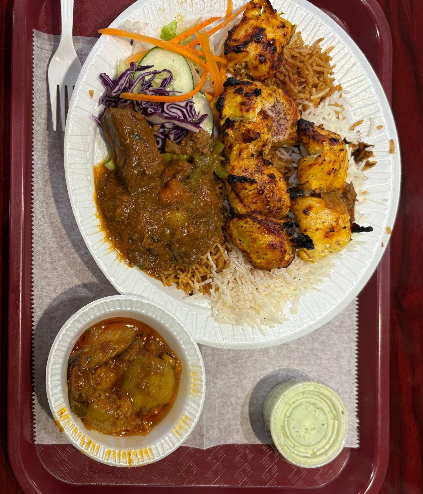
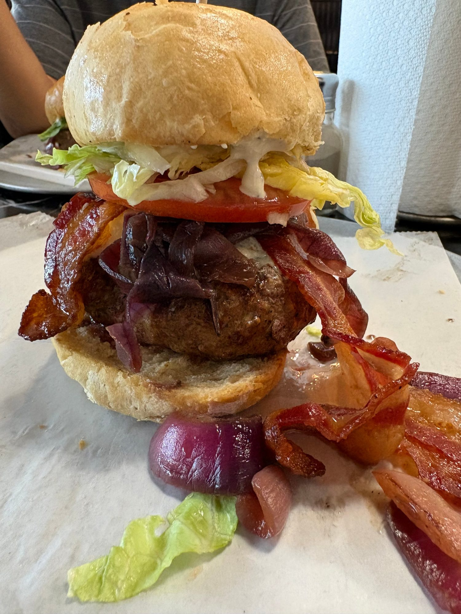
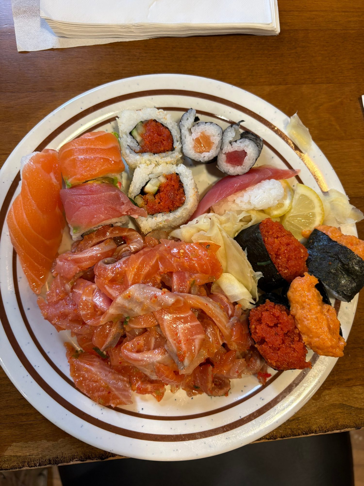
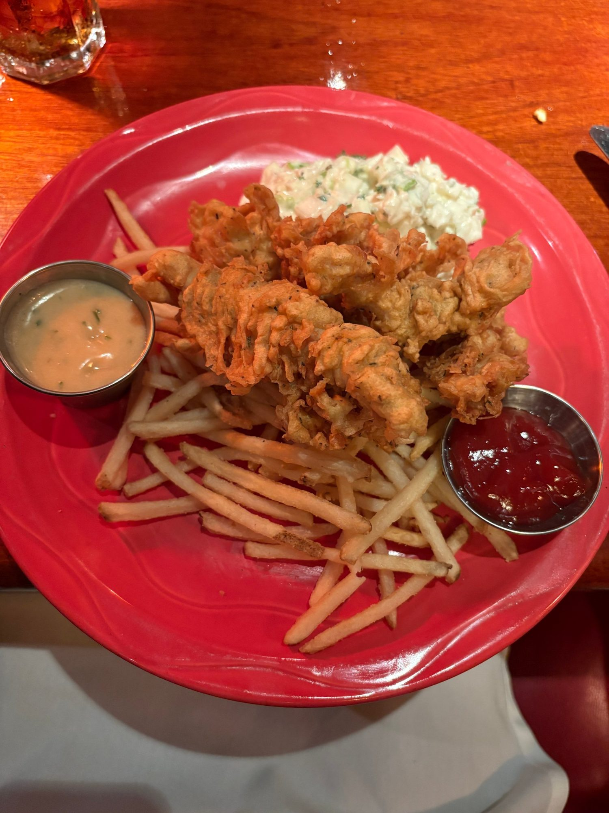
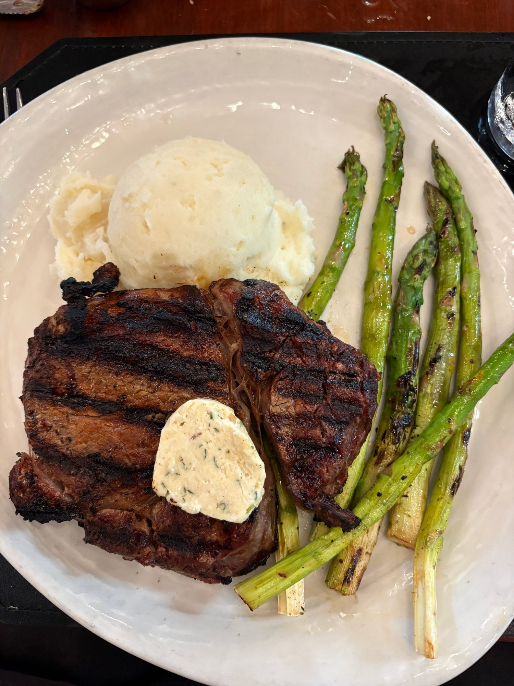

Who this guide is for
Skip the reviews. Ask a local.
Hi everyone! I'm Bill, and I've grown up in Northern Virginia my whole life. If you're looking for something new to eat, don't be worried about all the different cuisines and reviews to go through — I got you covered.
Ever since I was a kid, my family has loved exploring new foods, cuisines, and restaurants, a habit I've continued by myself and with my friends. I made this site as a guide to some of the best places I've been to around Northern Virginia.
The Big Five
My five go-to spots
Kabobs, burgers, sushi, a brewpub, and a steak house — five cuisines across five corners of NoVA. Tap any card for the full review.

9/10Afghan · Centreville
Kabob Express
Authentic kabobs, great atmosphere, friendly staff — never not worth it.
Read the Kabob Express review →
9.5/10Burgers · Leesburg
MELT Gourmet Cheeseburgers
Not just the best burger in Northern Virginia — this place will give any burger spot a run for its money.
Read the MELT review →
9/10AYCE buffet · Fair Oaks
Sushi On
Fresh, all-you-can-eat sushi, plus so much more.
Read the Sushi On review →
8.5/10Brewpub · Centreville & Sterling
Sweetwater Tavern
The Swiss army knife of sit-down American restaurants.
Read the Sweetwater review →
9/10Seafood & steaks · Crystal City
McCormick & Schmick's
Amazing steak and seafood for special occasions.
Read the McCormick's review →